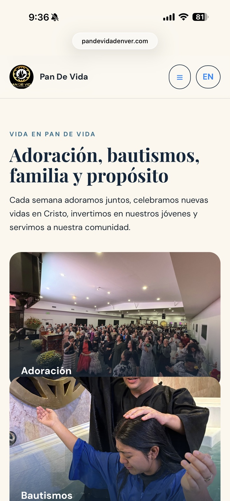
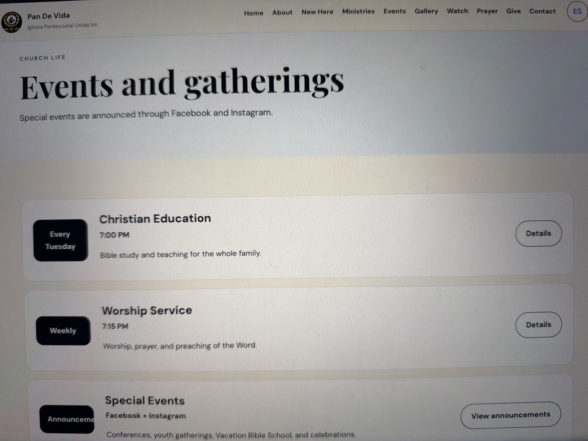
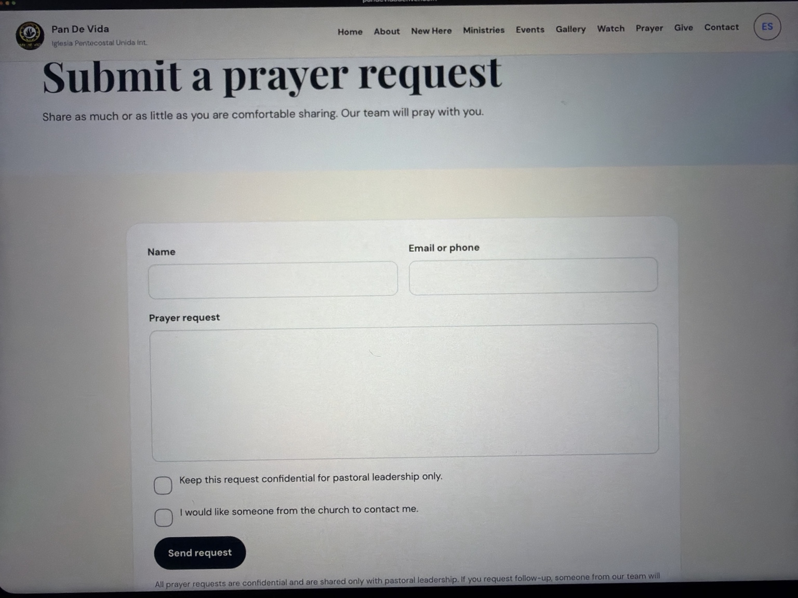

UX + Information Architecture
Organized the experience around clear destinations including About, New Here, Ministries, Events, Gallery, Watch, Prayer, Give, and Contact.
Web Design • Development • UX • Bilingual Experience
Building a modern digital home for a Denver faith community.
A live website redesign focused on making church information, events, media, prayer resources, and community content easier to discover across desktop and mobile, with English and Spanish experiences built into the interface.

01 • Overview
The project needed to turn a broad set of church resources into a clear digital experience. Visitors need to quickly understand the community, find ministries and events, watch messages, submit prayer requests, contact the church, and move between English and Spanish experiences on different screen sizes.
02 • My Role
Organized the experience around clear destinations including About, New Here, Ministries, Events, Gallery, Watch, Prayer, Give, and Contact.
Built a modern editorial look using church photography, strong typography, branded imagery, generous spacing, and clear calls to action.
Designed the interface to adapt from desktop navigation to a simplified mobile experience while keeping content readable and visually engaging.
Integrated English and Spanish navigation so the website can better serve the community across languages.
Used GitHub for the web project and configured the custom domain for the live PandeVidaDenver.com experience.
03 • Mobile + Bilingual UX
The mobile experience reorganizes navigation into a compact menu and keeps the language control visible. Large photography and readable content blocks help the church’s community story remain engaging on a smaller screen.

04 • Community Experience


05 • Digital Execution
The project connects design and marketing thinking with implementation. The site combines branding, photography, content hierarchy, interactive experiences, multimedia, responsive behavior, GitHub-based development, and a live custom domain.
06 • Takeaway
This project demonstrates my ability to move beyond a mockup and build a functioning digital experience around an organization’s audience, content, brand, and day-to-day communication needs.